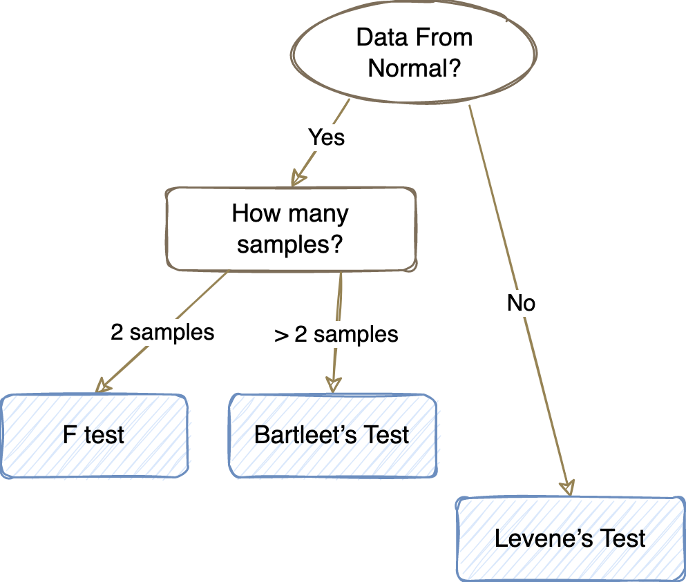
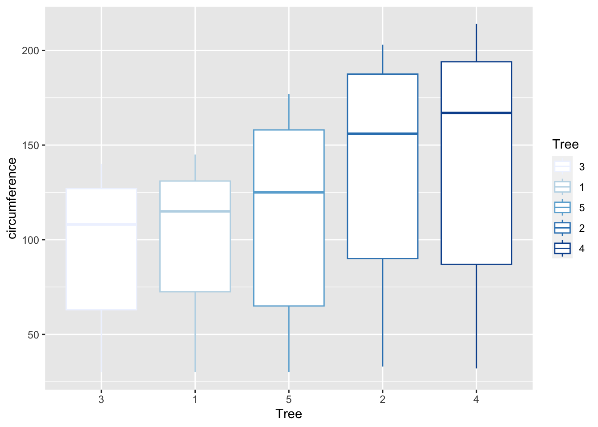
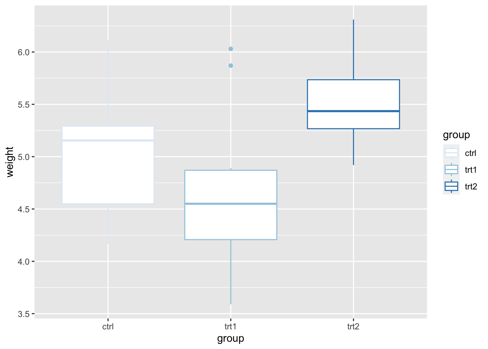

§ Chapter2 Simple Statistics Test
2.1 Normality Test
There are two common normality tests:
1. Shapiro-Wilk test , is preferred for small samples (n < 50).
2. Kolmogorov-Smirnov (KS) test, for larger samples, the KS test is recommended.
- Hypotheses:
\(H_0\): Data follows a normal distribution.
\(H_a\): Data does not follow a normal distribution.
2.1.1 Shapiro-Wilk Test
library("ggplot2")
ggplot(data.frame(iris$Sepal.Length), aes(sample=iris$Sepal.Length)) +
stat_qq() + stat_qq_line(color="lightblue") Figure 2.1: Sepal.Length QQ plot
##
## Shapiro-Wilk normality test
##
## data: iris$Sepal.Length
## W = 0.97609, p-value = 0.01018Shapiro-Wilk, p-value is 0.01018 <0.05.
So we reject the null hypothesis. The data are not from a normal population.
ggplot(data.frame(iris$Sepal.Width), aes(sample=iris$Sepal.Width)) +
stat_qq() + stat_qq_line(color="lightblue") Figure 2.2: Sepal.Width QQ plot
##
## Shapiro-Wilk normality test
##
## data: iris$Sepal.Width
## W = 0.98492, p-value = 0.1012Shapiro-Wilk, p-value is 0.1012 >0.05.
So we accept the null hypothesis. The data come from a normal population.
2.1.2 Kolmogorov-Smirnov Test
#generate dataset of 100 values that follow a Poisson distribution with mean=5
PoiData <- rpois(n=100, lambda=5)
#perform Kolmogorov-Smirnov test
ks.test(PoiData, "pnorm")## Warning in ks.test.default(PoiData, "pnorm"): ties should not be present for the Kolmogorov-Smirnov test##
## Asymptotic one-sample Kolmogorov-Smirnov test
##
## data: PoiData
## D = 0.95725, p-value < 2.2e-16
## alternative hypothesis: two-sided2.2 One sample t-Test
One-sample t-test is used to determine whether an unknown population mean is different from a specific value. For a valid test, we need assumptions:
➊ Independent, ➋ Continuous, ➌ Normailty.
- Hypotheses:
\[\begin{equation} H_0: \mu = \mu_0 \\ H_a: \mu \not= \mu_0 \end{equation}\]
- Test Statistic:
\[\begin{equation} t = \frac{\overline{x}-\mu{}_{0}}{s_{\overline{x}}}, \quad s_{\overline{x}} = \frac{s}{\sqrt{n}} \end{equation}\]
☕Example:
Data : 【Modern Elementary Statistics (11th Edition): John E. Freund】
The yield of alfalfa from a random sample of six test plots in 1.4, 1.6, 0.9, 1.9, 2.2, and 1.2 tons per acre.
- (a). Check whether these data can be looked upon as a sample from a normal population
- (b). If so, test at the 0.05 level of significance whether this supports the contention that the average yield for this kind of alfalfa is 1.5 tons per acre.
- Assumption: the population we are sampling has roughly the shape of a normal distribution.
##
## One Sample t-test
##
## data: asfalfa
## t = 0.17303, df = 5, p-value = 0.8694
## alternative hypothesis: true mean is not equal to 1.5
## 95 percent confidence interval:
## 1.038130 2.028536
## sample estimates:
## mean of x
## 1.533333- \(H_0: \mu =1.5\) v.s. \(H_a: \mu \not= 1.5\)
- \(\alpha=0.05\)
- Reject the null hypothesis if \(t\le-2.571\) or \(t\ge 2.571\), where \(t = \frac{\overline{X} - \mu_0}{S/\sqrt{n}}\), and \(2.571\) is the value of \(t_{0.025}\) for \(6-1=5\) degrees of freedom.
- Calculating the formula for \(t\), \(t = \frac{1.5333-1.5}{0.47188/\sqrt{6}}\approx 0.173\)
- Since \(t=0.173\) falls between \(-2.571\) and \(2.571\), the \(H_0: \mu =1.5\) can not be rejected;
in other word, the data tend to support the contention that the average yield of the given kind of alfalfa is 1.5 tons per acre.
2.3 Paired t-Test
Paired t-test compare the means for two (and only two) related (paired) units on a continuous outcome that is normally distributed. Also know as Dependent t Test, Repeated Measures t Test.
Data need from Normal distribution, if data from highly skewed Non-normal distributions, we use Wilcoxon signed rank Test instead.
Hypotheses:
\[\begin{equation} H_0: \mu_1 = \mu_2 \\ H_a: \mu_1 \not= \mu_2 \\ or \\ H_0: \mu_1 - \mu_2 = 0 \\ H_a: \mu_1 - \mu_2 \not= 0 \\ \end{equation}\]
- Test Statistic:
\[\begin{equation} t = \frac{\overline{x}_{\mathrm{diff}}-0}{s_{\overline{x}}}, \quad s_{\overline{x}} = \frac{s_{\mathrm{diff}}}{\sqrt{n}} \end{equation}\]
☕Example:
Data : 【Modern Elementary Statistics (11th Edition): John E. Freund】
Following are the average weekly losses of worker hours due to accidents in ten industrial plants before and after the installation of an elaborate safety program:
45 and 36 、 73 and 60 、 46 and 44 、 124 and 119 、 33 and 35 、
57 and 51 、 83 and 77 、 34 and 29 、 26 and 24 、17 and 11Use the 0.05 level of significance to test whether the safety program is effective.
- Assumption: the population we are sampling has roughly the shape of a normal distribution.
x <- c(45, 73, 46, 124, 33, 57, 83, 34, 26, 17)
y <- c(36, 60, 44, 119, 35, 51, 77, 29, 24, 11)
t.test(x, y, paired=TRUE, alternative='greater' )##
## Paired t-test
##
## data: x and y
## t = 4.0333, df = 9, p-value = 0.001479
## alternative hypothesis: true mean difference is greater than 0
## 95 percent confidence interval:
## 2.836619 Inf
## sample estimates:
## mean difference
## 5.2The differences between the respective pairs are 9, 13, 2, 5, -2, 6, 6, 5, 2, and 6.
- \(H_0: \mu_1-\mu_2 =0\) v.s. \(H_a: \mu_1-\mu_2 > 0\)
- \(\alpha=0.05\)
- Reject the null hypothesis if \(t\ge 1.833\), where \(t = \frac{\overline{X} - \mu_0}{S/\sqrt{n}}\), and \(1.8333\) is the value of \(t_{0.05}\) for \(10-1=9\) degrees of freedom.
- Calculating the formula for \(t\), \(t = \frac{5.2-0}{4.077/\sqrt{10}}\approx 4.033\)
- Since \(t=4.033\) falls exceeds \(1.833\), the \(H_0: \mu =0\) must be rejected; in other word, we have shown that the industrial safety program is effective.
2.4 Two samples t-Test
Two samples t-test compares the means of two independent groups. Also know as Independent t Test, Unpaired t Test.
Data need from Normal distribution, if data from highly skewed Non-normal distributions, we use Mann-Whitney U Test instead.
Data need Homogeneity of variances, when population variances are not equal, we use Welch’s t-test instead.
Hypotheses:
\[\begin{equation} H_0: \mu_1 = \mu_2 \\ H_a: \mu_1 \not= \mu_2 \\ \end{equation}\]
- Test Statistic:
\[\begin{equation} T = \frac{\bar{Y_{1}} - \bar{Y_{2}}} {\sqrt{{s^{2}_{1}}/N_{1} + {s^{2}_{2}}/N_{2}}} \end{equation}\]
If equal variances are assumed, formula reduces to:
\[\begin{equation} T = \frac{\bar{Y_{1}} - \bar{Y_{2}}} {s_{p}\sqrt{1/N_{1} + 1/N_{2}}}, \quad s_{p}^{2} = \frac{(N_{1}-1){s^{2}_{1}} + (N_{2}-1){s^{2}_{2}}} {N_{1} + N_{2} - 2} \end{equation}\]
☕Example:
Data : 【Modern Elementary Statistics (11th Edition): John E. Freund】
The following random samples are measurements of the heat-producing capacity ( in millions of calories pet ton ) of coal from two mines : Mine1: 8380 8180 8500 7840 7990 Mine2: 7660 7510 7910 8070 7790
Use the 0.05 level of significance to test whether the difference between the means of these two samples is significant.
- Assumption:
- The population we are sampling has roughly the shape of a normal distribution.
- The two samples have equal standard deviations.
- The two samples are independent
- The population we are sampling has roughly the shape of a normal distribution.
M1 <- c(8380, 8180, 8500, 7840, 7990)
M2 <- c(7660, 7510, 7910, 8070, 7790)
t.test(M1, M2, var.equal=TRUE)##
## Two Sample t-test
##
## data: M1 and M2
## t = 2.5118, df = 8, p-value = 0.03627
## alternative hypothesis: true difference in means is not equal to 0
## 95 percent confidence interval:
## 31.95248 748.04752
## sample estimates:
## mean of x mean of y
## 8178 7788We suspect the assumption of \(\sigma_1^2=\sigma_2^2\)
- \(H_0: \mu_1 =\mu_2\) v.s. \(H_a: \mu_1 \neq \mu_2\)
- \(\alpha=0.05\)
- Reject the null hypothesis if \(t\le-2.306\) or \(t\ge2.306\) , where \(t\) is given by the formula above, and \(2.306\) is the critical value .
- Calculating the formula for \(t\), \(t=\frac{(8178-7788)}{245.5\sqrt{\frac{1}{5}+\frac{1}{5}}}\approx 2.51\)
- Since \(t = 2.51\) falls exceeds \(2.306\), the \(H_0: \mu_1 =\mu_2\) must be rejected; in other words, we conclude that the difference between the two sample means is significant.
2.4.1 Welch’s two sample t-test
☕Example of Welch’s Two Sample t-test:
##
## Welch Two Sample t-test
##
## data: x1 and x2
## t = 1.7469, df = 12.037, p-value = 0.1061
## alternative hypothesis: true difference in means is not equal to 0
## 95 percent confidence interval:
## -0.1095821 0.9975657
## sample estimates:
## mean of x mean of y
## -0.09917552 -0.543167342.5 One Proportion Z-Test
- Hypotheses:
\[\begin{equation} H_0: p = p_0 \\ H_a: p \not= p_0 \end{equation}\]
- Test Statistic:
\[\begin{equation} z^*=\dfrac{\hat{p}-p_0}{\sqrt{\dfrac{p_0(1-p_0)}{n}}} \end{equation}\]
☕Example:
Suppose that current vitamin pills cure 80% of all cases. A new vitamin pill has been discovered or made. In a sample of 150 patients with the lack of vitamins that were treated with the new vitamins, 95 were cured. Do the results of this study support the claim that the new vitamins have a higher cure rate than the existing vitamins?
##
## 1-sample proportions test without continuity correction
##
## data: 95 out of 160, null probability 0.8
## X-squared = 42.539, df = 1, p-value = 6.928e-11
## alternative hypothesis: true p is not equal to 0.8
## 95 percent confidence interval:
## 0.5163169 0.6667870
## sample estimates:
## p
## 0.59375##
## Exact binomial test
##
## data: 95 and 160
## number of successes = 95, number of trials = 160, p-value = 2.253e-09
## alternative hypothesis: true probability of success is not equal to 0.8
## 95 percent confidence interval:
## 0.5133727 0.6705878
## sample estimates:
## probability of success
## 0.59375The p-value of the test is 0.59, which is greater than the significance level alpha = 0.05. The claim that 95 out of 160 people cured with new vitamins are accurate.
prop.test() and binom.test() can be used to perform one-proportion test, the analysis will result in a chi-square statistic and a p-value.
2.6 Two Proportion Z-Test
- Hypotheses:
\[\begin{equation} H_0: p_1 - p_2 = 0 \\ H_a: p_1 - p_2 \not= 0 \end{equation}\]
- Test Statistic:
\[\begin{equation} z^*=\dfrac{(\hat{p}_1-\hat{p}_2)-0}{\sqrt{\hat{p}^*(1-\hat{p}^*)\left(\dfrac{1}{n_1}+\dfrac{1}{n_2}\right)}}, \quad \hat{p}^*=\dfrac{x_1+x_2}{n_1+n_2} \end{equation}\]
☕Example:
Let’s say we have two groups of student A and B. Group A with an early morning class of 400 students with 342 female students. Group B with a late class of 400 students with 290 female students. Use a 5% alpha level. We want to know, whether the proportions of females are the same in the two groups of the student?
##
## 2-sample test for equality of proportions with continuity correction
##
## data: c(342, 290) out of c(400, 400)
## X-squared = 19.598, df = 1, p-value = 9.559e-06
## alternative hypothesis: two.sided
## 95 percent confidence interval:
## 0.07177443 0.18822557
## sample estimates:
## prop 1 prop 2
## 0.855 0.725The p value of the result is 9.559e-06, greater than significance level of alpha 0.05. That means there is no difference between Two Proportions.
Chi-square test of independence on a 2 × 2 table, the resulting Chi-square test statistic would be equal to the square of the Z-test statistic from the Z-test of two independent proportions.
2.7 One sample Variance Test
- Hypotheses:
\[\begin{equation} H_0: \sigma^2=\sigma^2_0 \\ H_a: \sigma^2 \not= \sigma^2_0 \end{equation}\]
- Test Statistic:
\[\begin{equation} \chi^2=\dfrac{(n-1)S^2}{\sigma^2_0} \end{equation}\]
☕Example:
Generate 20 observations from a normal distribution with parameters mean=2 and sd=1. Test the null hypothesis that the true variance is equal to 0.5 against the alternative that the true variance is not equal to 0.5.
## $statistic
## Chi-Squared
## 28.6409
##
## $parameters
## df
## 19
##
## $p.value
## [1] 0.1436947
##
## $estimate
## variance
## 0.753708
##
## $null.value
## variance
## 0.5
##
## $alternative
## [1] "two.sided"
##
## $method
## [1] "Chi-Squared Test on Variance"
##
## $data.name
## [1] "vardata"
##
## $conf.int
## LCL UCL
## 0.4359037 1.6078623
## attr(,"conf.level")
## [1] 0.95
##
## attr(,"class")
## [1] "htestEnvStats"2.8 Two sample Variance Test
- Hypotheses:
\[\begin{equation} H_0: \sigma^2_1=\sigma^2_2 \\ H_a: \sigma^2_1 \not= \sigma^2_2 \end{equation}\]
- Test Statistic:
\[\begin{equation} F=\dfrac{S^2_1}{S^2_2} \quad \sim \quad F_{1-(\alpha/2)}(n-1,m-1)=\dfrac{1}{F_{\alpha/2}(m-1,n-1)} \end{equation}\]
☕Example:
data1 <- rnorm(50, mean = 0, sd = 2)
data2 <- rnorm(30, mean = 1, sd = 1)
var.test(data1, data2) # Do data1 and data2 have the same variance?##
## F test to compare two variances
##
## data: data1 and data2
## F = 3.4928, num df = 49, denom df = 29, p-value = 0.0005706
## alternative hypothesis: true ratio of variances is not equal to 1
## 95 percent confidence interval:
## 1.754874 6.571449
## sample estimates:
## ratio of variances
## 3.49282
2.9 Bartleet’s Test & Levene’s Test
Test if k samples have equal variances. Equal variances across samples is called homogeneity of variances.
1. Bartleet’s test, samples come from Normal distribution.
2. Levene’s test, samples come from Non-Normal distribution.
- Hypotheses:
\[\begin{align} & H_0: \sigma^2_1 = \sigma^2_2 = ... = \sigma^2_k \\ & H_a: \sigma^2_i \not = \sigma^2_j ~ for ~ at ~ least ~ one ~ pair (i,j). \end{align}\]
☕Example:
Example in R is performed using the Oranges dataset. Here, we wish to test if the variances circumference of each tree. The null hypothesis states that the trees will have the same variances, otherwise for the alternative hypothesis.
library("datasets")
library("ggplot2")
Orangedata <- Orange
ggplot(Orangedata, aes(Tree, circumference, color=Tree) )+ geom_boxplot()+ scale_color_brewer(palette="Blues")
##
## Bartlett test of homogeneity of variances
##
## data: circumference by Tree
## Bartlett's K-squared = 2.4607, df = 4, p-value = 0.6517p-value of 0.6517 is not less than the significance level of 0.05. This means the null hypothesis can not be rejected that the variance is the same for all treatment groups. This concludes that there is no proof to recommend that the variance in circumference is different for the tree groups.
☕Example:
Consider the R’s inbuilt PlantGrowth dataset that gives the dried weight of three groups of ten batches of plants, wherever every group of ten batches got a different treatment. The weight variable gives the weight of the batch and the group variable gives the treatment received either ctrl, trt1 or trt2.
## Loading required package: carData##
## Attaching package: 'car'## The following object is masked from 'package:EnvStats':
##
## qqPlot## The following object is masked from 'package:purrr':
##
## some## The following object is masked from 'package:dplyr':
##
## recodeggplot(PlantGrowth, aes(group, weight, color=group) )+
geom_boxplot()+ scale_color_brewer(palette="Blues")
## Levene's Test for Homogeneity of Variance (center = median)
## Df F value Pr(>F)
## group 2 1.1192 0.3412
## 27p-value of 0.3412 is not less than the significance level of 0.05. The null hypothesis can not be rejected that the variance is the same for all treatment groups.